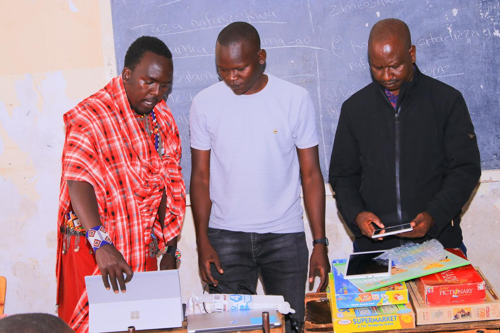
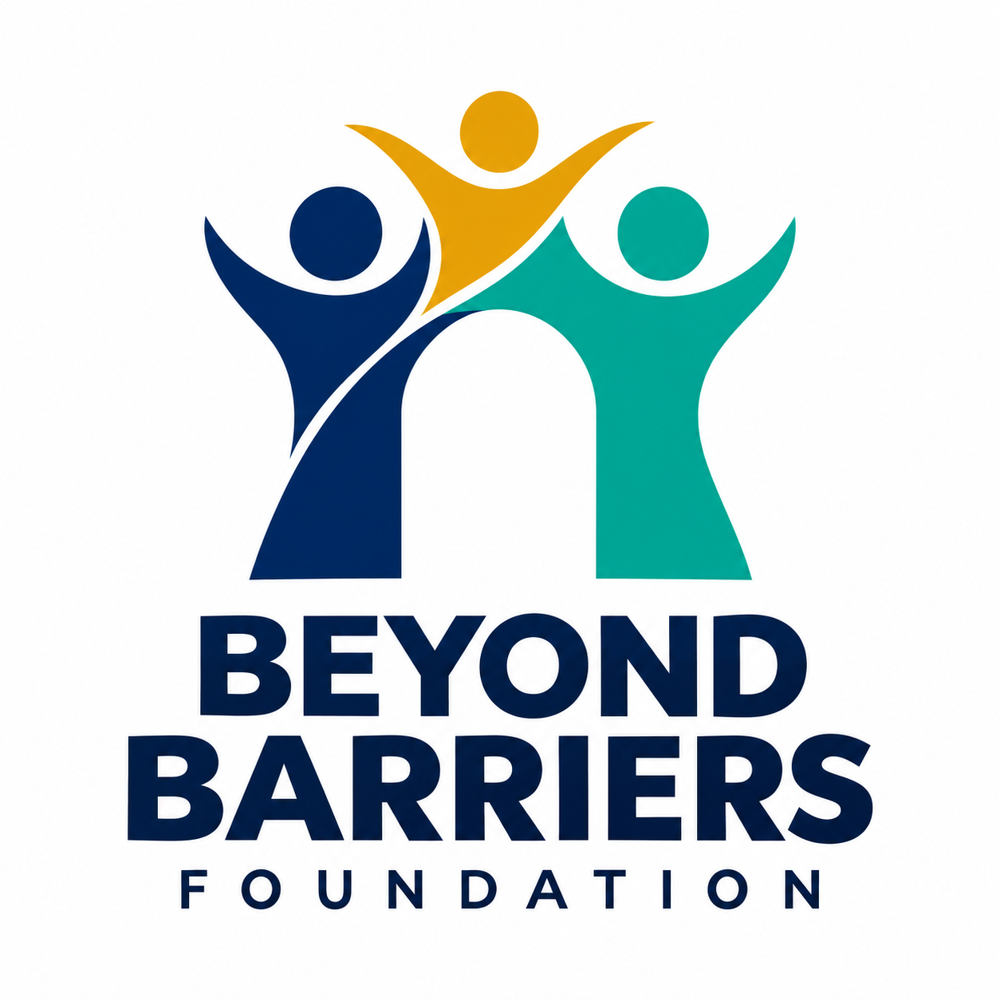
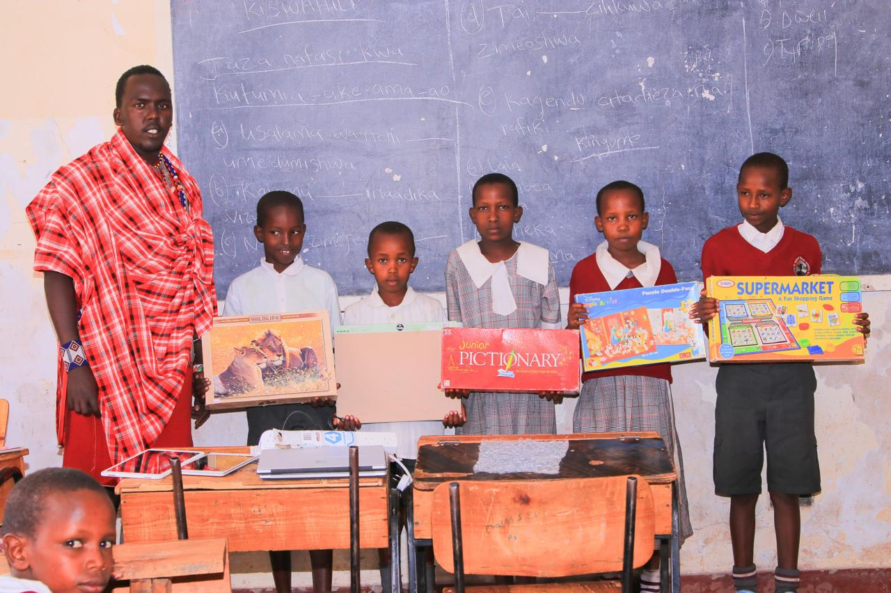
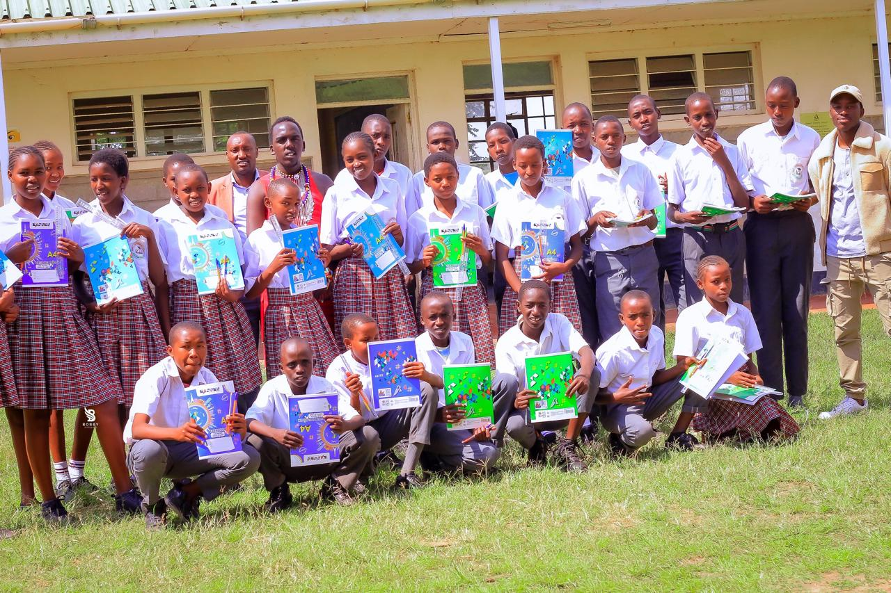
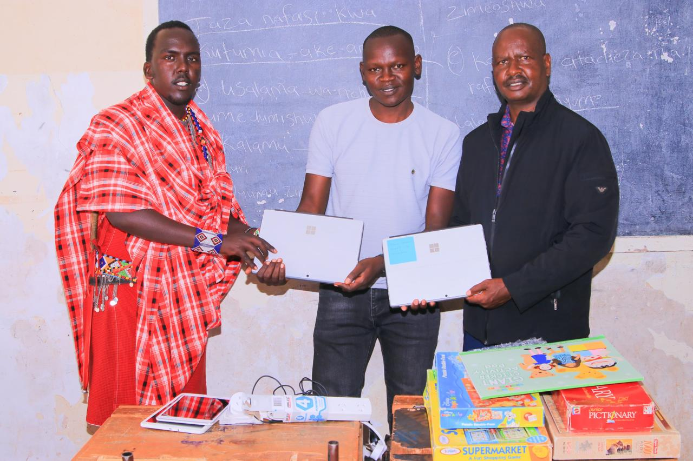
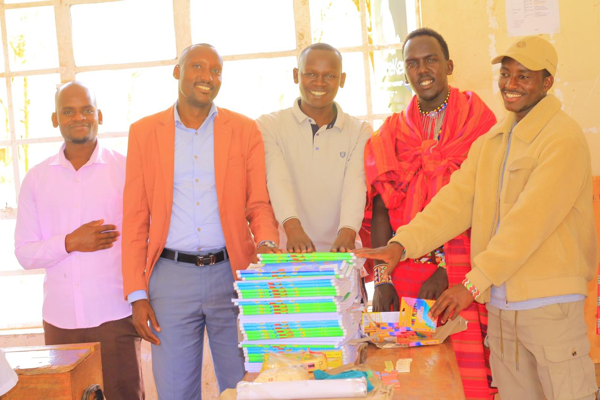
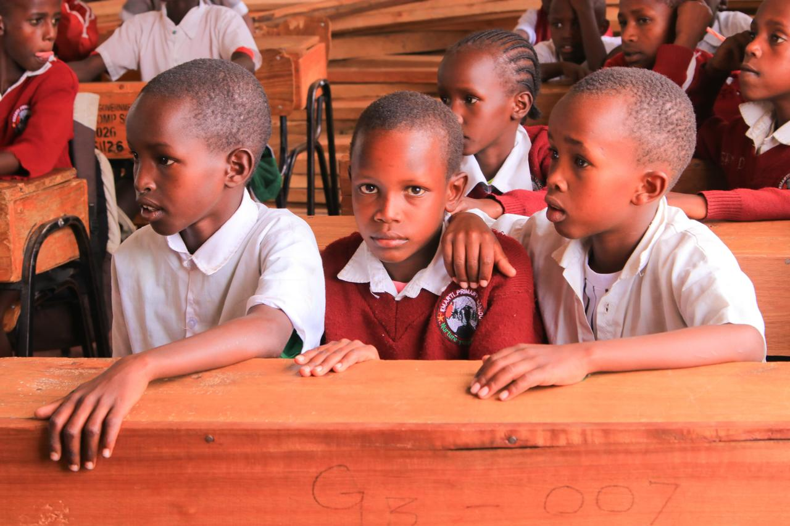
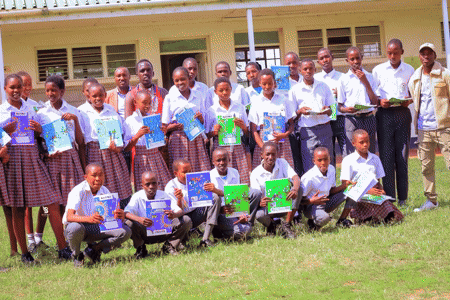

01 / EDUCATIONTools to learn. Room to grow.
Books and classroom resources help turn curiosity into everyday learning.
Support learning →
BEYOND BARRIERSFOUNDATION
ROOTED IN THE MAASAI MARA, KENYA
Opening doors to learning, connection and a brighter future. Together, we can go beyond barriers.

OUR STORY
Beyond Barriers Foundation is based in the Maasai Mara, Kenya. Our vision is a community where access to learning and opportunity helps every person move forward.
From books in a classroom to a first connection with technology, progress begins with practical support and people coming together.
Get to know us →OPENING DOORS, TOGETHER
Learning materials, digital tools and community connection are the focus of the activities pictured here.

01 / EDUCATIONBooks and classroom resources help turn curiosity into everyday learning.
Support learning →
02 / DIGITAL ACCESSLaptops bring new ways to explore, learn and connect into the classroom.
Talk about digital support →
03 / COMMUNITYShared effort brings teachers, learners and supporters together around opportunity.
Connect with our team →
EVERY LEARNER. EVERY POSSIBILITY.
IN THE COMMUNITY
A closer look at school visits, shared learning and community moments in the Maasai Mara.
Community in focus A short photo montage · 9 seconds

Moments that connect us Photo loop
THERE’S A PLACE FOR YOU HERE
Have resources, time, skills or an idea to share? Let’s talk about how you can support opportunities in the Maasai Mara.
LET’S START A CONVERSATION
Maasai Mara, Kenya
+254 713 711 372marabeyondbarriers@gmail.comChat on WhatsApp →